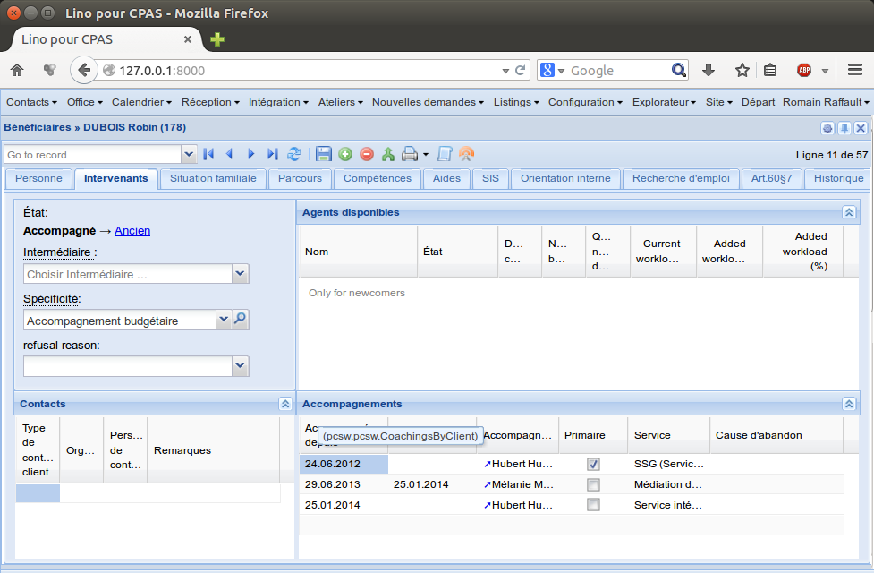

20140912 (Friday, 12 September 2014)¶
Getting started with Lino Così¶
Johannes is trying to get a Lino Così up and running. Which revealed some problems.
Lino does not yet work in Dango 1.7
initdb_demofor Lino Così failed because the demo fixtures require commondata (and commondata.be and commondata.ee)EDIT: Maybe only
fab initdbfailed, and commondata is not needed for getting started.I added instructions in Installing Lino Così, but agree that this is a suboptimal procedure since it is a lot of typing. It would be easier to just type pip install commondata.ee, but I haven’t yet released these packages to PyPI.
fab testfailed for commondata.Released the commondata packages to PyPI and changed the instructions in Installing Lino Così.
Fixed some copyright headers in Lino Così which still mentioned GPL instead of LGPL.
Renamed the file
project_info.pytosetup_info.pyin 3 projects: Lino itself, Lino Welfare and Lino Così. Because (1) that sounds a more logical name and (2) the file is next to aprojectsdirectory, which was annoying because auto-completion needed a second shoot to differenciate them.Continued to meditate (in /about/license.rst) about the question “BSD or GPL”.
Lino Welfare: Coaching ended but client still coached¶
Mathieu reported a subtle problem:
- Quand les travailleurs consultent la liste de leurs dossiers attribués, même quand ils ont noté la fin du suivi, le dossier reste dans leur quota (voir mail d’Arianne ci-dessous).
Here is an example case in the demo data:
pcsw.Clients with parameter coached_by set to “Mélanie” should not show this client. But currently it does.
Added a test case in General PCSW.
The directives defined by atelier.sphinxconf.insert_input now
cause a warning and report the filename and line number when an
exception occurs. This helped me to unreveal the following problem
which had been occuring for some time when building the docs for
Lino Welfare.
A default implementation of dd.Model.get_print_language() is now
defined on every model. No need to explicitly declare it as
dd.Printable. This is because lino.modlib.excerpts makes
printability “dynamic”: it makes it possible to turn any model into a
“printable” just by creating an lino.modlib.excerpts.ExcerptType for
it. Another such method is dd.Model.get_print_recipient() which
returns None by default.

{kind=link}